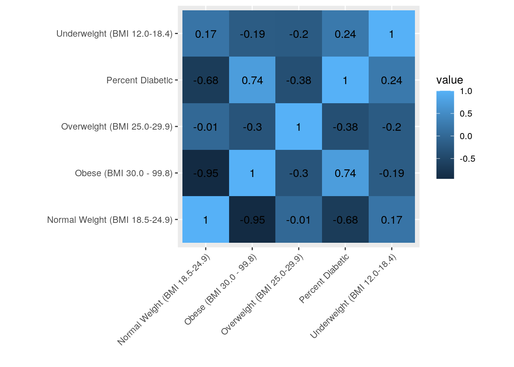
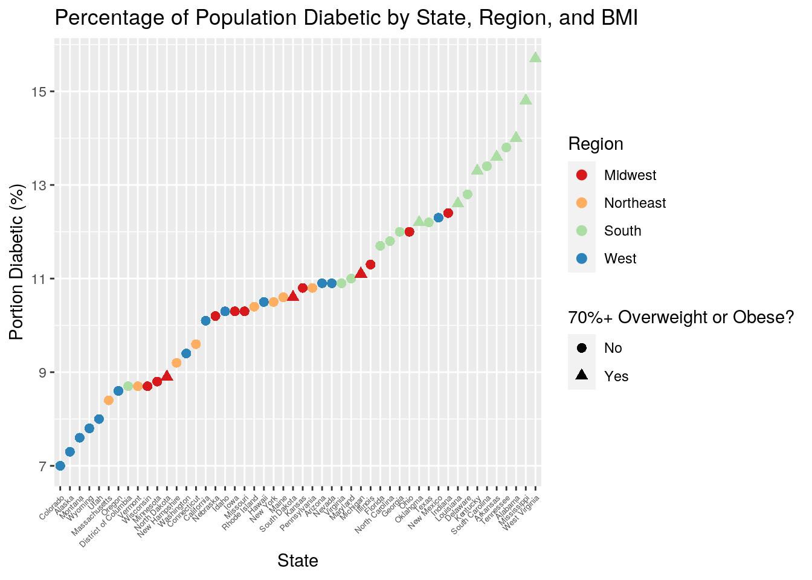
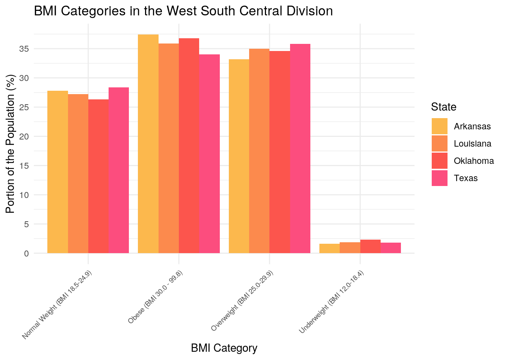
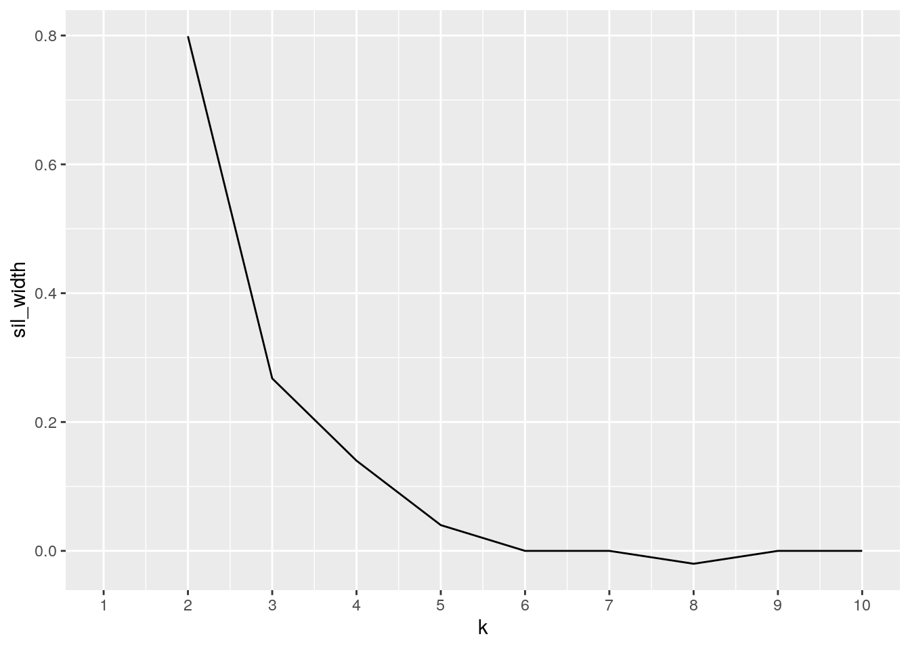
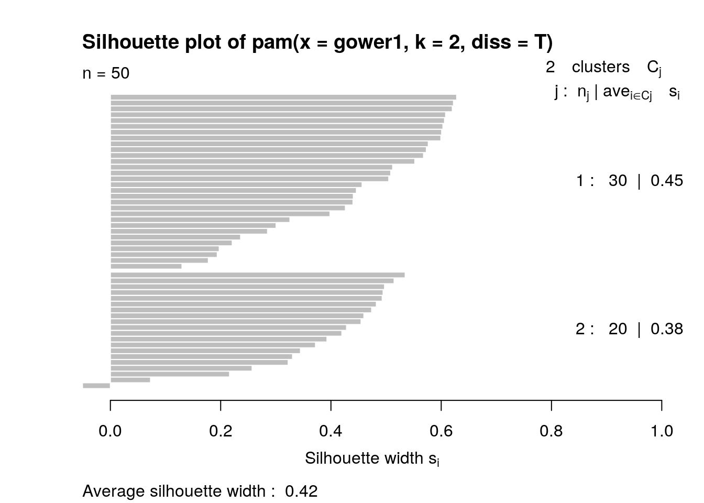
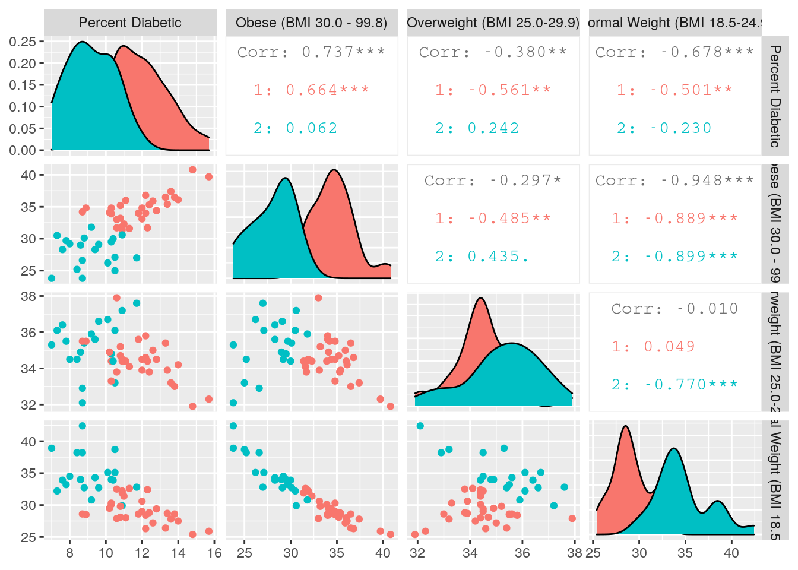

This project centers around American health. I first chose two datasets from the CDC's BRFSS Prevalence & Trends Data, both from 2019. One of these data sets contained information regarding weight using the metric of BMI, specifically examining the percentage of the population in each BMI category by state. The original data included 28 columns, and most of these were formatting for the CDC's system of display. The variables I used from this data set included state, percentage underweight, percentage normal weight, percentage overweight, and percentage obese. The second data set featured information regarding diabetes, specifically the percentage of the population that is diabetic per state. The original data again included a 28 columns, and again most of these were formatting or logistical. The variables I used from this data included the state, diabetic status, and the percentage of the population for the status specified. Additionally, I included a third data set simply consisting of regions and divisions into which the United States can be divided. The original data set contained four variables: state, state abbreviation, region, and division. I used all except the abbreviation column.
As mentioned previously, I aquired the first two datasets from the CDC. The third I found on the website of a datascience company called Kaggle. These datasets were interesting to me because I enjoy health science and population data. The interconnected relationship between diet and diabetes is well know, and I was curious to see if these real world data sets would reflect that. For one specific example, I was interested to see whether there would be an increase in diabetes in states or regions that had populations with higher average BMIs.
Below I give previews of the original data sets.
# For the diabetes data set:
head(ExportCSV)## # A tibble: 6 x 28
## ID Year LocationAbbr LocationDesc Class Topic Indicator Response
## <dbl> <dbl> <chr> <chr> <chr> <chr> <chr> <chr>
## 1 3.65e6 2019 US All States,… Chro… Diab… Have you… Yes
## 2 3.65e6 2019 US All States,… Chro… Diab… Have you… Yes, pr…
## 3 3.65e6 2019 US All States,… Chro… Diab… Have you… No, pre…
## 4 3.65e6 2019 US All States,… Chro… Diab… Have you… No
## 5 3.65e6 2019 UW All States … Chro… Diab… Have you… Yes
## 6 3.65e6 2019 UW All States … Chro… Diab… Have you… Yes, pr…
## # … with 20 more variables: DataSource <chr>, Data_Value_Unit <chr>,
## # Data_Value_Type <chr>, Data_Value <chr>, Data_Value_Footnote_Symbol <chr>,
## # Data_Value_Footnote <chr>, Low_Confidence_Limit <dbl>,
## # High_Confidence_Limit <dbl>, Sample_Size <dbl>, Stratification <chr>,
## # StratificationType <chr>, IndicatorId <chr>, LocationOrder <dbl>,
## # ParentStateDisplayOrder <dbl>, FootnoteType <chr>, FootNoteSymbol <chr>,
## # FootnoteText <chr>, URL <chr>, DatasourceAbbr <chr>, Agency <chr># For the BMI data set:
head(ObeseExport)## # A tibble: 6 x 28
## ID Year LocationAbbr LocationDesc Class Topic Indicator Response
## <dbl> <dbl> <chr> <chr> <chr> <chr> <chr> <chr>
## 1 3.65e6 2019 US All States,… Over… BMI … Weight c… Obese (…
## 2 3.65e6 2019 US All States,… Over… BMI … Weight c… Overwei…
## 3 3.65e6 2019 US All States,… Over… BMI … Weight c… Normal …
## 4 3.65e6 2019 US All States,… Over… BMI … Weight c… Underwe…
## 5 3.65e6 2019 UW All States … Over… BMI … Weight c… Obese (…
## 6 3.65e6 2019 UW All States … Over… BMI … Weight c… Overwei…
## # … with 20 more variables: DataSource <chr>, Data_Value_Unit <chr>,
## # Data_Value_Type <chr>, Data_Value <dbl>, Data_Value_Footnote_Symbol <lgl>,
## # Data_Value_Footnote <lgl>, Low_Confidence_Limit <dbl>,
## # High_Confidence_Limit <dbl>, Sample_Size <dbl>, Stratification <chr>,
## # StratificationType <chr>, IndicatorId <chr>, LocationOrder <dbl>,
## # ParentStateDisplayOrder <dbl>, FootnoteType <chr>, FootNoteSymbol <chr>,
## # FootnoteText <chr>, URL <chr>, DatasourceAbbr <chr>, Agency <chr># For the region data set:
head(states)## # A tibble: 6 x 4
## State `State Code` Region Division
## <chr> <chr> <chr> <chr>
## 1 Alaska AK West Pacific
## 2 Alabama AL South East South Central
## 3 Arkansas AR South West South Central
## 4 Arizona AZ West Mountain
## 5 California CA West Pacific
## 6 Colorado CO West MountainIn this section, I did a basic cut and parsing of the data to show only the desired variables.
# Cleaning up the data to isolate the variables I want:
tidyexport <- ExportCSV %>% select(1:8, 12:16)
extratidy <- tidyexport %>% select(4, 8, 9)
diabetesdata <- extratidy %>% filter(Response == "Yes") %>% select(-Response) %>%
rename(`Percent Diabetic` = Data_Value)
tidyweight <- ObeseExport %>% select(4, 8, 12) %>% na.omit
untidyweight <- tidyweight %>% pivot_wider(names_from = Response,
values_from = Data_Value)
bmidata <- untidyweight %>% group_by(LocationDesc) %>% fill(2:5) %>%
distinct() %>% na.omit
regiondata <- states %>% select(-"State Code") %>% rename(LocationDesc = State)In the diabetes data, I used select to call only the columns relevant to the join and then filtered for the percentage of people who had diabetes for non-pregnancy related reasons. I then made the column with the percentages the sole column for the data outside of the states column, which I later used for joining.
In the BMI data, I again used select to call relevant columns. Additionally, I got rid of the NAs in the data. The data originally had a column for the different BMI statuses and then another for percentages with separate rows for each category relating to each state. I used pivot wider to separate those into their own columns, with the percentages as the values in the columns. Finally, I put all the percentages in the same row for each state using fill and got rid of the excess rows leftover.
In the region data, I simply used select to get rid of the abbreviations column and then renamed the column I later used to join the datasets to match that of the previous two.
projdata1 <- full_join(diabetesdata, bmidata, by = "LocationDesc")
projdata <- inner_join(projdata1, regiondata, by = "LocationDesc")
head(projdata)## # A tibble: 6 x 8
## LocationDesc `Percent Diabet… `Obese (BMI 30.… `Overweight (BM…
## <chr> <chr> <dbl> <dbl>
## 1 Alabama 14 36.1 34.2
## 2 Alaska 7.3 30.5 36.1
## 3 Arizona 10.9 31.4 34.4
## 4 Arkansas 13.6 37.4 33.2
## 5 California 10.1 26.2 36.7
## 6 Colorado 7 23.8 35.3
## # … with 4 more variables: `Normal Weight (BMI 18.5-24.9)` <dbl>, `Underweight
## # (BMI 12.0-18.4)` <dbl>, Region <chr>, Division <chr>After cleaning and rearranging each dataset, the CDC datasets both had 54 observations while the regions dataset had 51 observations. I decided to do a full join on the first two sets since they shared the same observations, then an inner join with the third set to cut out any differences. For both my joins, I joined by the state variable called "LocationDesc." The resulting 50 observations feature one per state (excluding New Jersey, which was actually absent from both of the original CDC datasets due to insufficient information) plus the District of Columbia. Observations for Guam, Puerto Rico, median data for the US/DC/territories, and median data for the US/DC were dropped from the first two sets, and the observation for New Jersey was dropped from the third set. I decided to join the sets this way because I wanted to avoid any NAs in the project data and I wanted to restrict observations to just the states and DC.
I noticed later that one of my numerical columns was typed as a character column, so I quickly changed that as well.
projdata$`Percent Diabetic` <- as.numeric(as.character(projdata$`Percent Diabetic`))Here's a preview of the data after joining:
head(projdata)## # A tibble: 6 x 8
## LocationDesc `Percent Diabet… `Obese (BMI 30.… `Overweight (BM…
## <chr> <dbl> <dbl> <dbl>
## 1 Alabama 14 36.1 34.2
## 2 Alaska 7.3 30.5 36.1
## 3 Arizona 10.9 31.4 34.4
## 4 Arkansas 13.6 37.4 33.2
## 5 California 10.1 26.2 36.7
## 6 Colorado 7 23.8 35.3
## # … with 4 more variables: `Normal Weight (BMI 18.5-24.9)` <dbl>, `Underweight
## # (BMI 12.0-18.4)` <dbl>, Region <chr>, Division <chr>This section of the document showcases a variety of summary statistics for the data. Each is labeled for reference in the explanation below.
# Stats 1&2
projdata %>% group_by(Region) %>% summarize(mean(`Percent Diabetic`),
sd(`Percent Diabetic`))## # A tibble: 4 x 3
## Region `mean(\`Percent Diabetic\`)` `sd(\`Percent Diabetic\`)`
## <chr> <dbl> <dbl>
## 1 Midwest 10.4 1.20
## 2 Northeast 9.78 0.930
## 3 South 12.6 1.64
## 4 West 9.28 1.68# Stat 3
projdata <- projdata %>% mutate(sum = rowSums(.[3:4])) %>% mutate(`70%+ Overweight or Obese?` = case_when(sum >=
70 ~ "Yes", sum < 70 ~ "No")) %>% select(-sum)
# Stat 4
projdata %>% rename(SeventyOverorObese = "70%+ Overweight or Obese?") %>%
group_by(Region, SeventyOverorObese) %>% summarize(mean(`Percent Diabetic`))## # A tibble: 6 x 3
## # Groups: Region [4]
## Region SeventyOverorObese `mean(\`Percent Diabetic\`)`
## <chr> <chr> <dbl>
## 1 Midwest No 10.5
## 2 Midwest Yes 10.2
## 3 Northeast No 9.78
## 4 South No 11.8
## 5 South Yes 13.7
## 6 West No 9.28# Stats 5, 6, 7, and 8
projdata %>% filter("South" == Region) %>% summarize(max(`Percent Diabetic`),
min(`Percent Diabetic`), max(`Obese (BMI 30.0 - 99.8)`),
min(`Obese (BMI 30.0 - 99.8)`))## # A tibble: 1 x 4
## `max(\`Percent Dia… `min(\`Percent Di… `max(\`Obese (BMI … `min(\`Obese (BMI …
## <dbl> <dbl> <dbl> <dbl>
## 1 15.7 8.7 40.8 23.8# Stat 9
projdata %>% rename(PD = "Percent Diabetic") %>% arrange(desc(PD)) %>%
summarize(last(LocationDesc))## # A tibble: 1 x 1
## `last(LocationDesc)`
## <chr>
## 1 Colorado# Stat 10
projdata %>% group_by(Region) %>% rename(SeventyOverorObese = "70%+ Overweight or Obese?") %>%
summarise(mean_reg = mean("Yes" == SeventyOverorObese))## # A tibble: 4 x 2
## Region mean_reg
## <chr> <dbl>
## 1 Midwest 0.25
## 2 Northeast 0
## 3 South 0.412
## 4 West 0# Stat 11
projdata %>% select(2, 3, 5) %>% select_if(is.numeric) %>% cor()## Percent Diabetic Obese (BMI 30.0 - 99.8)
## Percent Diabetic 1.0000000 0.7366918
## Obese (BMI 30.0 - 99.8) 0.7366918 1.0000000
## Normal Weight (BMI 18.5-24.9) -0.6777331 -0.9478616
## Normal Weight (BMI 18.5-24.9)
## Percent Diabetic -0.6777331
## Obese (BMI 30.0 - 99.8) -0.9478616
## Normal Weight (BMI 18.5-24.9) 1.0000000In stats one and two, I used group by and summarize to show that the mean rates of diabetes for each region are 10.45% for the Midwest (standard deviation: 1.20), 9.78% for the Northeast (sd:0.93), 12.62% for the South (sd:1.64), and 9.28% for the West (sd:1.68). In stat three I then used mutate to add a new categorical column that indicates whether or not a state's population is 70% or more overweight or obese. Using this new variable, I grouped by region and the overweight/obese variable to compare mean percent diabetic when a population is more or less than 70% obese or overweight for stat 4. Of the two regions that did have states with populations that were 70% or more overweight+, the Midwest showed a slight (~0.3%) decrease in the diabetic population in states that responded "Yes," while the South showed an increase (~2%) in the diabetic population in states that responded "Yes." For five through eight, I also wanted to know how diverse the South in particular was in terms of BMI and diabetes. Running min and max inside of summarize for a couple of variables told me that the difference between the most and least diabetic state was 7% of the population and the difference between the most and least obese state was 17%.
In stat nine, I used last with summarize and desc with arrange to find that the state with the lowest diabetic population was Colorado. Through grouping by region and summarizing the proportion of states per region that had 70% or more of their population overweight or obese, I found (in stat ten) that the South had a nearly 2/5 increase in states with this high BMI status compared to the Midwest. Finally, I created a correlation matrix using select and cor functions for my final statistic. Note that in many of these statistics I briefly "renamed" the column I made with mutate because R didn't like all the symbols in the original name when doing other statistics.
My correlational heatmap for my numeric variables:
projdata %>% select_if(is.numeric) %>% cor %>% as.data.frame %>%
rownames_to_column %>% pivot_longer(-1) %>% ggplot(aes(rowname,
name, fill = value)) + geom_tile() + geom_text(aes(label = round(value,
2))) + theme(axis.text.x = element_text(angle = 45, vjust = 1,
hjust = 1)) + xlab("") + ylab("") + coord_fixed() The most interesting correlations shown on the heatmap were that comparing percent diabetic with obese percentage and normal weight percentage. However, as this is relevant to the later discussion in the "Dimensionality Reduction" portion of this report, I will not expand upon that here.
Plot #1:
projplot <- projdata %>% rename(PercentDiabetic = "Percent Diabetic") %>%
rename(ow = "70%+ Overweight or Obese?") %>% rename(Obese = "Obese (BMI 30.0 - 99.8)") %>%
rename(Overweight = "Overweight (BMI 25.0-29.9)") %>% rename(NormalWeight = "Normal Weight (BMI 18.5-24.9)") %>%
rename(Underweight = "Underweight (BMI 12.0-18.4)")
ggplot(projplot, aes(x = reorder(LocationDesc, PercentDiabetic),
y = PercentDiabetic, color = Region, shape = ow)) + theme(axis.text.x = element_text(angle = 45,
vjust = 1, hjust = 1, size = 5)) + geom_point(size = 2.5) +
ggtitle("Percentage of Population Diabetic by State, Region, and BMI") +
xlab("State") + ylab("Portion Diabetic (%)") + scale_color_brewer(palette = "Spectral") +
labs(shape = "70%+ Overweight or Obese?") + scale_y_continuous(breaks = seq(5,
16, 2)) The plot showcases the percentage of the population of each state that is diabetic, while also relating that percentage to the region in which the state resides and whether or not that state has a population that is 70% or more overweight or obese. I've arranged the data so that the highest percentages of diabetics in the population are found on the rightmost portion of the graph. From the regional coloring across the data points, the trend seems to be that the West is generally the least diabetic, the Northeast and Midwest are mixed in the middle, and the South is generally the most diabetic. This seems to indicate that there are regional divides in the number of people who have diabetes. Additionally, the triangles representing the high BMI status are loosely arregated in the righthand portion of the graph, indicating a relationship between high BMI and higher numbers of diabetic people in the population.
Plot #2:
projdata %>% filter(Division == "West South Central") %>% pivot_longer(3:6,
names_to = "BMICategory", values_to = "BMIPercentages") %>%
ggplot(aes(x = BMICategory, y = BMIPercentages, fill = LocationDesc)) +
theme_minimal() + geom_bar(position = "dodge", stat = "summary",
fun = mean) + ggtitle("BMI Categories in the West South Central Division") +
xlab("BMI Category") + ylab("Portion of the Population (%)") +
theme(axis.text.x = element_text(angle = 45, vjust = 1, hjust = 1,
size = 7)) + scale_y_continuous(breaks = seq(0, 40, 5)) +
labs(fill = "State") + scale_fill_manual(values = c("#FCB84D",
"#FC8A4D", "#FC554D", "#FC4D7E")) In this plot I've choosen to concentrate on the West Central Southern division of the country, since that is the portion that is most relevant to us in Austin. The plot shows each the proportion of each state that lies in each BMI category. Relative to these other Central Southern states, Texas seems to do slightly better, showing higher numbers in the "normal weight" category and less high numbers in the "obese" category. Arkansas and Oklahoma more or less tie for the poorer end, and Lousiana sits in the middle. Overall, the four states show very similar percentages for each category, adding more evidence to the idea that regional and divisional cuts can show strong similarities in the attributes of their populations. This idea was discussed in the context of diabetes with the last graph, but seems to hold for BMI as well.
gowertry <- projdata %>% select(1:5)
gowerr <- gowertry %>% mutate_if(is.character, as.factor) %>%
column_to_rownames("LocationDesc")
gower1 <- daisy(gowerr, metric = "gower")
gower2 <- gower1 %>% scale()
sil_width <- vector()
for (i in 2:10) {
pam_fit <- pam(gower2, diss = TRUE, k = i)
sil_width[i] <- pam_fit$silinfo$avg.width
}
ggplot() + geom_line(aes(x = 1:10, y = sil_width)) + scale_x_continuous(name = "k",
breaks = 1:10)
pam2 <- pam(gower1, k = 2, diss = T)
plot(pam2, which = 2)
ggpairs(gowerr, aes(color = as.factor(pam2$clustering))) For my dimensionality reduction portion of the project, I chose to use PAM to examine my data set in clusters. I decided to reduce my data down to just the principle categorical variable (states) and four of my numerical variables. Namely, the diabetic variable and every BMI variable excluding the category for "underweight." My correlation heatmap showed the correlation between this excluded variable and percent diabetic to be the most weak, and I thought I might get clearer clusters without it. I used gower distances for the PAM, scaled my data, and used a silhouette width graph to decide on the number of clusers. Since the peak of the graph was highest over "two," I made two clusers. Looking at the silhouette plot, I found this wasn't exactly a great fit, as my clusters still only constituted a "weak structure" that "could be artificial," according to the cutoffs for average silhouette widths. The average silhouette width for my clustering was 0.42. I decided to continue on regardless since there was no better cluster group I could choose for the variables I wanted to study.
To visualize the clustering, I made a table of all pairwise variable combinations. From this table, the most interesting and relavant graphs/correlations were those between percent diabetic and the various BMI categories. It appeared that the red cluster was states with higher obesity and diabetic rates, while the blue cluster was the states with lower rates of diabetes and higher rates for normal weight. The high correlation values between the obese category and the diabetic variable, as well as between the normal weight category and the diabetic category, suggest that there is a strong incidence of higher diabetes rates when obseities rates rise, and a strong incidence of lower diabetes rates when normal weight rates rise.
To compare and see which states belonged to which clusters, I also printed out a sample list of thirty states with their respective cluster assignments. It seems that these assignments aligned closely with regional assignments, which we know from the plots in the "Visualization" above align closely with differences in attribute rates. This seems to support the identification of the clusters given above.
projdata %>% mutate(cluster = pam2$clustering) %>% group_by(cluster,
Region) %>% select(1, 7, 10) %>% arrange(Region) %>% print(n = 30)## # A tibble: 50 x 3
## # Groups: cluster, Region [8]
## LocationDesc Region cluster
## <chr> <chr> <int>
## 1 Illinois Midwest 1
## 2 Indiana Midwest 1
## 3 Iowa Midwest 1
## 4 Kansas Midwest 1
## 5 Michigan Midwest 1
## 6 Minnesota Midwest 2
## 7 Missouri Midwest 1
## 8 Nebraska Midwest 1
## 9 North Dakota Midwest 1
## 10 Ohio Midwest 1
## 11 South Dakota Midwest 1
## 12 Wisconsin Midwest 1
## 13 Connecticut Northeast 2
## 14 Maine Northeast 1
## 15 Massachusetts Northeast 2
## 16 New Hampshire Northeast 2
## 17 New York Northeast 2
## 18 Pennsylvania Northeast 1
## 19 Rhode Island Northeast 2
## 20 Vermont Northeast 2
## 21 Alabama South 1
## 22 Arkansas South 1
## 23 Delaware South 1
## 24 District of Columbia South 2
## 25 Florida South 2
## 26 Georgia South 1
## 27 Kentucky South 1
## 28 Louisiana South 1
## 29 Maryland South 1
## 30 Mississippi South 1
## # … with 20 more rows